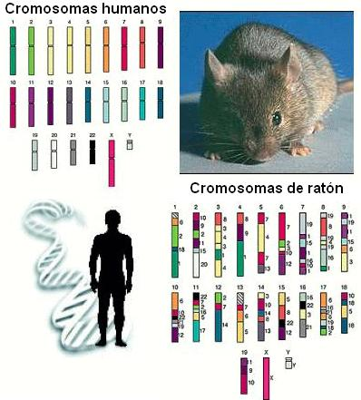
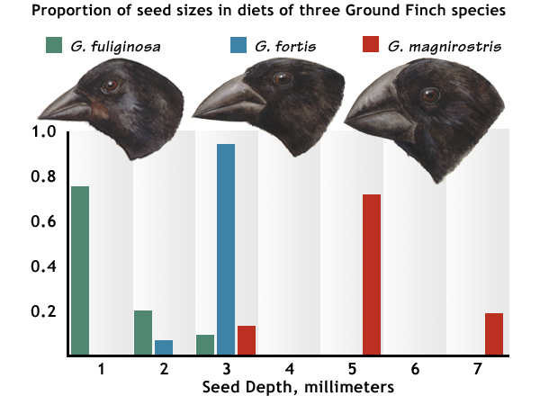

Publicado incialmente por la BBC en español
Jerry Coyne, profesor del Departamento de Ecología y Evolución de la Universidad de Chicago, y autor de un libro sobre Darwin, le explica al científico británico cómo su obra ha influido en él y en miles de otros científicos en el mundo.
Resalta cómo la mayoría de los descubrimientos efectuados en los últimos 150 años encajan cómodamente con lo que decía Darwin. En particular, los fósiles descubiertos desde la muerte del gran científico corroboran su teoría de la evolución.
“Mi estimado Sr. Darwin,

¡Feliz 200 aniversario! Espero que esté lo bien que pueda esperarse de alguien que ha estado muerto 130 años. Permita que me introduzca: soy uno de los miles -tal vez cientos de miles- de biólogos profesionales que trabajan a tiempo completo sobre su legado científico.
Estará contento de saber que el Reino Unido continúa siendo una potencia en lo que se conoce hoy como biología evolutiva y que sus ideas están ampliamente aceptadas en todo el planeta. Yo trabajo en Chicago, Estados Unidos.
Pero hasta los franceses finalmente han tenido que abandonar su creencia en Jean-Baptiste Lamarck, cuyas erróneas ideas sobre la evolución usted hizo tanto por desacreditar.
Su obra “El origen de las especies” cumple 150 este año. Acabo de releerla en su honor y tengo que decir que realmente es un trabajo completo y profundo. Es excepcional lo robusto que ha resultado el libro, considerando lo que usted desconocía cuando lo escribió.
Los descubrimientos de la biología moderna, mucho de ellos inconcebibles cuando usted trabajaba en su estudio de Down House, han proporcionado cada vez más pruebas que apoyan sus ideas y ninguna que la contradice. Hemos aprendido mucho en los últimos 150 años pero casi todo encaja cómodamente en el marco que usted esbozó en su libro.
Tome el ADN por ejemplo. Esto es lo que llamamos el material hereditario que pasa de una generación a otra. Usted no sabía nada de eso, ¿recuerda cómo deseaba saber más sobre cómo funcionaba la herencia? Ahora tenemos una secuencia de ADN completa para docenas de especies, cada una consistente en una cadena formada por miles de millones de cuatro letras que constituye el ADN -A, T, G y C- cada una de las cuales contiene un componente químico distinto (Adenina, Timina, Guanina y Citosina).
¿Qué encontramos cuando comparamos estas secuencias, por ejemplo entre un ratón y un humano? Vemos el equivalente ADN de las similitudes anatómicas -como los mamíferos- que usted se dio cuenta que compartían ratones y humanos al descender de un ancestro común, un mamífero anterior.
Cadenas de A, T, G y C nos cuentan exactamente la misma historia evolutiva que características como la lactancia y la sangre caliente. Es realmente maravilloso que su descubrimiento hace 150 años de un ancestro común fuera tan relevante a los últimos avances en el nuevo campo que llamamos biología molecular.
En su obra, usted presentó muy pocas pruebas para explicar la evolución a partir de los registros fósiles, lavándose las manos al quejarse que estaban incompletos. Pero desde entonces el trabajo de cazadores de fósiles en el mundo ha producido muchas pruebas de cambio evolutivo y muchas formas “transitorias” que conectan a grandes grupos de animales, demostrando su idea de un ancestro común. Usted predijo que estas formas existían, nosotros las hemos encontrado.
El descubrimiento de más fósiles ha ayudado a corroborar las teorías de Darwin.
Éstas incluyen fósiles que muestran la transición entre mamíferos y reptiles, peces y anfibios, y hasta dinosaurios con plumas, ¡los ancestros de los pájaros! Tan solo en los últimos años los paleontólogos han descubierto un fósil increíble llamado Tiktaalik, que es el intermediario entre los peces y los anfibios.
Tiene una cabeza plana y el cuello de un anfibio, pero con una cola y cuerpo de pez mientras que sus aletas son resistentes, fácilmente capaces con una ligera modificación de darles una ventaja cuando abandonan el agua. El registro de fósiles nos ha proporcionado presenciar de manera directa un evento histórico para el planeta: la colonización de la tierra por parte de los vertebrados.
Y tenemos pruebas igual de convincentes de la recolonización del mar por parte de los mamíferos: el grupo de dio lugar a las ballenas. En “El origen de las espacies” usted tenía razón al sugerir que las ballenas se originaron a partir de animales terrestres, pero se equivocó en un punto. Usted creía que podían provenir de carnívoros como los osos pero ahora sabemos que esto no es cierto. La ballena ancestral proviene de un pequeño animal con pezuñas similar a un ciervo.
Y en los últimos 30 años hemos descubierto toda una serie de fósiles intermedios que cubren el vacío entre estos antiguos ciervos y las ballenas modernas. Éstos muestran cómo perdieron sus patas traseras, crearon aletas y movieron su orificio de respiración encima de su cabeza.
Tanto el Tiktaalik como estas ballenas ancestrales acallaron las objeciones que usted mismo tuvo que enfrentar y que afirmaban que no pudo existir una forma transitoria entre la tierra y el agua.

Posiblemente el más increíble fósil intermedio, sin embargo, viene de una transición evolutiva más cerca de casa. En 1871, usted predijo que como los humanos parece que están más relacionados con los grandes simios africanos -gorilas y chimpancés- encontraríamos fósiles humanos en ese continente. ¡Y ahora tenemos cantidad de ellos!
Resulta que nuestro linaje se separó del de los chimpancés -nuestros parientes más cercanos- hace casi 7 millones de años atrás y tenemos una serie de fósiles extraordinarios que documentan nuestra transición de criaturas primitivas muy parecidas a los simios hasta las formas humanas modernas actuales.
Nuestra propia especie se ha convertido en un ejemplar de la evolución. Y sabemos aún más: pruebas provenientes de nuestro material de ADN nos dice que todos los humanos modernos provienen de un evento migratorio relativamente reciente -unos 100.000 años atrás- cuando nuestros ancestros abandonaron África y se esparcieron por todo el mundo.
La idea de la cual usted estaba más orgulloso era la selección natural. Ésa también ha tenido 150 años felices y se mantiene como gran causa de la evolución y como única causa de la adaptación. Algo que le gustará saber especialmente son las observaciones de selección natural en los pinzones de las Galápagos, llamados ahora pinzones de Darwin en su honor.
Hace unas décadas atrás, algunos zoólogos observaron que una gran sequía en las islas redujo el número de pequeñas semillas que podían comer los pájaros. Y, tal como se predecía, la selección natural impulsó la evolución de pájaros con picos más grandes en cuestión de sólo unos años.
Me gustaría concluir esta carta diciéndole que su teoría de la evolución ha sido universalmente aceptada. Como usted bien sabe, la evolución ha sido una píldora amarga para los religiosos. Por ejemplo, una parte importante del público estadounidense, a pesar de haber sido educado, sigue creyendo en la verdad literal presentada en el Génesis.
Por desgracia, muchas veces tengo que interrumpir mis investigaciones para evitar que estos “creacionistas” consigan que sus puntos de vista bíblicos sean enseñados en las escuelas públicas.
Descanse en paz, Sr. Darwin, y le dejo con el deseo que los próximos 100 años sean testigos de una evolución de la racionalidad en un mundo convulso.
Su más humilde servidor,
Jerry Coyne”
http://www.bbc.co.uk/mundo/ciencia_tecnologia/2009/11/091112_darwin_cartas4_mes.shtml
Baruch Blumberg, científico estadounidense y Premio Nobel de Medicina en 1976 por su trabajo sobre infecciones virales, le cuenta a Darwin cómo su trabajo fue clave en el desarrollo de una vacuna contra la hepatitis B.
Le explica sobre todo la importancia del Proyecto Genoma Humano (1990-2003) en crear aplicaciones prácticas de los conceptos de la evolución a la medicina y la salud pública y cómo los viajes del famoso científico por América Latina le sirvieron de motivación para dedicar su vida a la ciencia.
Estimado Sr. Darwin,

Me complace escribirle esta carta en el 200 aniversario de su nacimiento y el 150 aniversario de la publicación de su obra “El origen de las especies”, un libro que unificó nuestros conocimientos de biología y que influenció fuertemente la percepción de los humanos sobre su lugar en la naturaleza.
Me gustaría explicarle la manera en que sus contribuciones que nos brindó en esa obra han influenciado la investigación científica moderna. El uso cada vez más frecuente de ideas evolutivas en la ciencia y la medicina es posible gracias al avance en nuestra comprensión de las unidades de herencia, lo que hoy llamamos genes.
Usted apreció la importancia de la herencia, es decir, de cómo las características se van pasando de una generación a otra, pero a pesar de que Mendel fue contemporáneo suyo, su trabajo de descubrir las leyes de la herencia no fue reconocido hasta 1900, años después de haber muerto.
Los conceptos sobre la teoría genética de selección natural iniciados por Ronald Fisher en 1930 acercaron la cada vez mayor precisión genética a las nociones generales sobre la selección. Pero fue el Proyecto Genoma Humano (1990-2003) los que produjo un avance en las aplicaciones prácticas de los conceptos de evolución a la medicina y la salud pública.
El Proyecto ordenó y creó un mapa de genes e identificó algunas de sus funciones. Ahora sabemos que la organización de los genes y sus efectos son más complejos de lo que pensábamos.
Sin embargo, una gran virtud del Proyecto, y particularmente de su megabase de datos, fue la apreciación de la increíble diversidad de formas naturales que pueden encontrarse a nivel bioquímico y genético.
Creo que fue análogo a la diversidad que usted descubrió en sus observaciones sobre el terreno que en gran parte le impulsaron en su aventura científica, su legendario viaje alrededor del mundo en el Beagle, sus conceptos unificadores biológicos y su publicación de “El origen de las especies”.
Debo de mencionarle cuánto sus viajes en el Beagle, sus caminatas en la cordillera de los Andes, sus trabajos sobre el terreno en las Galápagos y las islas del Pacífico, han moldeado mi propia visión de la vida como científico y viajero, observador de la naturaleza en su estado natural. Hasta he usado su ejemplo para buscar financiación para mi propio trabajo sobre el terreno.
Muchos años antes de que se completara el Proyecto Genoma Humano, supimos que los genes producían proteínas. Me imagino que debe conocer proteínas son la clara de huevos, pero ahora conocemos muchos tipos de proteínas diferentes. Este tipo de elemento químico es la base de muchos de los procesos de la vida.
Es mucho más difícil estudiar las proteínas que los genes pero tiene la ventaja de poder observar la variación que se produce cuando interactúa con el ambiente que la rodea.
Al igual que usted y sus colegas pasaron mucho tiempo viajando por el mundo en búsqueda de variaciones a nivel macroscópico en las espacies -como la longitud de los picos o la diferente coloración- en los años 60 supimos que al observar la variación de las proteínas en muestras de sangre recogidas en todo el mundo serían un buen indicador de las variaciones en los genes que producen proteínas.
Además creamos hipótesis que afirmaban que esta variación estaría relacionada con las distintas maneras en que la gente reacciona a las causas de las enfermedades.
Usando este enfoque descubrimos un agente que es infeccioso y que puede ser transmitido de una persona a otra -lo que ahora llamamos virus- y que era responsable de causar la hepatitis B, una enfermedad del hígado muy grave.
También identificamos una proteína que podría usarse como vacuna para la hepatitis B que podría prevenir su transmisión, similar a la vacuna contra el poleo con la que usted está familiarizado. En la actualidad, la vacuna contra la hepatitis se usa en todo el mundo y ha prevenido un gran número de enfermedades y muertes.
Creo que estará satisfecho de saber que la observación minuciosa de variaciones -igual que usted hizo con los percebes- y la aplicación de sus investigaciones sobre principios biológicos generales pudo haber salvado muchas vidas.
Es un privilegio para mí escribir esta carta a pesar de que no pueda esperar una respuesta. Sería negligente por mi parte si al conmemorar sus éxitos, premios y su inmortalidad científica y literaria, no reconociera que usted, como todos los seres humanos, ha tenido su parte de mala suerte y tragedia.
Usted padeció la muerte de hijos pequeños, las críticas de muchos de sus amigos y familiares, el desacuerdo de científicos y la sociedad. Pero sus contribuciones han resultado en el avance de nuestra comprensión de la dinámica de la naturaleza y, como usted muy elocuentemente escribió, una apreciación de las “formas interminables más hermosas y maravillosas que han estado y están evolucionando”.
Por último, feliz cumpleaños.
Volver a la sección Ciencias de los orígenes
Comentarios
Comments powered by Disqus